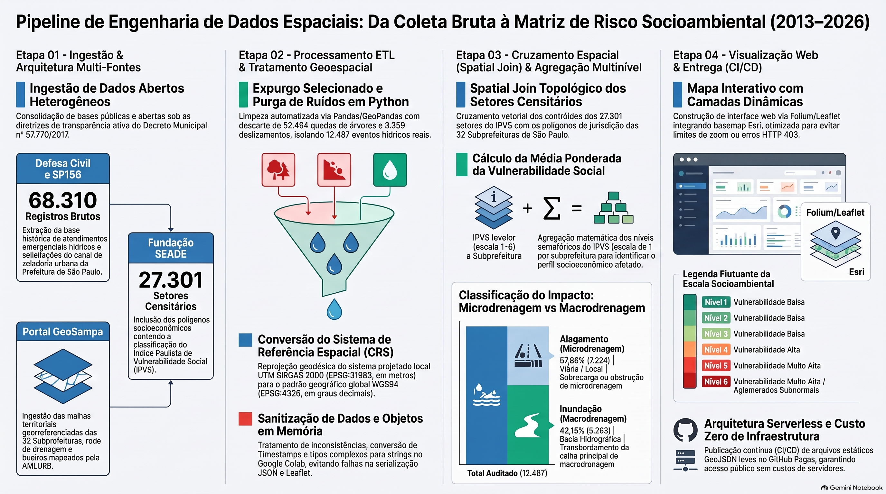

🌊 Mapeamento Interativo de Alagamentos e Vulnerabilidade Social de São Paulo
Plataforma analítica geoespacial baseada em dados abertos (GeoSampa, Defesa Civil & SEADE) — do calor histórico à matriz integrada de risco socioambiental.
12.487
Ocorrências hídricas
68.310
Eventos auditados
32
Subprefeituras
27.301
Setores IPVS
11
Camadas de mapas
UNIVERSIDADE VIRTUAL DO ESTADO DE SÃO PAULO — UNIVESP
Projeto Integrador Extensionista IV (DRP14 - Turma 003) — Polo Carrão
Pesquisadores: Daniel Martins Queiroz, Leonardo Tomaz de Souza Neto, Livia Maria Roncoleta, Mateus Fujita Silveira, Nailah Carolina Silva, Roberto Joaquim dos Santos, Rodrigo Jose de Melo, William Yang Chen Fan. Orientadora: Prof.ª Millena de Araujo Rodrigues
🚀 Fase 1: Fundamentos & Macro-Contexto Territorial
📈 Fase 2: Variação Temporal, Altimétrica & Estrutural
⚡ Fase 3: Infraestrutura, Drenagem & Modelagem Preditiva
🎯 Fase 4: Matriz de Risco Socioambiental & Utilidade Pública
📌 Visão Geral do Projeto
Esta plataforma interativa foi concebida para apoiar os cidadãos paulistanos e a gestão pública na prevenção e mitigação de riscos de enchentes. Através da ingestão, tratamento e cruzamento espacial de bases de dados abertas da cidade de São Paulo, o projeto relaciona a infraestrutura de drenagem urbana com o histórico de ocorrências hídricas e os níveis de vulnerabilidade social.
💡 O Paradigma da Prevenção: De Dados Fragmentados à Inteligência Proativa
A abordagem convencional lida com a zeladoria de forma reativa ("Onde alagou ontem?"). Este piloto consolida dados abertos para permitir uma atuação proativa ("Quais áreas de risco crônico exigem intervenção e zeladoria hoje?"). Toda a solução foi projetada com arquitetura 100% Open Source e custo zero de infraestrutura.
📊 Anatomia e Auditoria do Dataset Hídrico (2013–2026)
A partir do volume bruto de 68.310 registros extraídos da Defesa Civil / COMDEC via Canal SP156, aplicou-se um pipeline rigoroso em Python para expurgar eventos não hídricos (52.464 quedas de árvores e 3.359 deslizamentos), resultando em 12.487 ocorrências hídricas auditadas:
57,85% (7.224) Falha na Microdrenagem: Alagamentos por obstrução de galerias, bueiros e bocas de lobo.
42,15% (5.263) Gargalo na Macrodrenagem: Inundações por transbordamento de rios, córregos e piscinões.
⚙️ Pipeline de Engenharia de Dados Espaciais
Abaixo está representado o fluxo de transformação dos dados geoespaciais desde a coleta de fontes primárias públicas até a geração da Matriz de Risco Socioambiental:

📐 Diagrama Técnico da Arquitetura (Mermaid / ByteByteGo)
Etapa 01
Ingestão e Fontes
Coleta automática de GeoJSONs do GeoSampa (subprefeituras, drenagem, bueiros AMLURB), histórico da Defesa Civil e setores do IPVS (SEADE).
Etapa 02
ETL & Reprojeção
Expurgo de ruídos em Python, conversão cartográfica de UTM SIRGAS 2000 (EPSG:31983) para WGS84 (EPSG:4326) e sanitização de objetos para JSON.
Etapa 03
Spatial Join
Agregação topológica de 27.301 setores do IPVS em 32 Subprefeituras e cálculo de densidade de alagamentos por km².
Etapa 04
Visualização Web
Renderização interativa leve em HTML5/Leaflet.js via Folium com Tiles Esri, sem limites de zoom e hospedada no GitHub Pages.
🧭 Como Navegar na Plataforma
Passo 01Escolha uma fase. A trilha acima organiza os mapas em 4 fases analíticas — do contexto territorial à matriz de risco final.
Passo 02Abra um mapa. Cada botão carrega uma camada interativa (zoom, filtros e painéis laterais) renderizada via Leaflet/Folium.
Passo 03Compare as camadas. Alterne entre temporal, altimétrico, drenagem e IPVS para identificar padrões e prioridades de ação.
🗺️ Trilha Analítica e Descrição das Camadas
Fase 1 - Mapa 0 (Calor Histórico Puro): Concentração espacial dos registros históricos de alagamentos na capital.
Fase 1 - Mapa 1 (Macro-Zonas): Agrupamento das 32 subprefeituras em 5 regiões (Centro, Norte, Leste, Oeste e Sul).
Fase 1 - Mapa 2 (Subprefeituras Geral): Malha territorial detalhada das 32 subprefeituras sobreposta ao calor.
Fase 1 - Mapa 3 (Individualização): Ferramenta para isolar subprefeituras específicas via painel lateral.
Fase 2 - Mapa 4 (Seletor Histórico por Ano): Painel cronológico para filtrar eventos de alagamento ano a ano (2013-2026).
Fase 2 - Mapa 5 (Altitude): Cruzamento entre ocorrências e o Modelo Digital de Elevação municipal.
Fase 2 - Pirâmide Altitudinal: Correlação gráfica entre frequência de alagamentos e cotas altimétricas.
Fase 3 - Mapa 6 (Drenagem + Anos): Hidrografia oficial (rios, canais e córregos) integrada ao filtro temporal.
Fase 3 - Mapa 7 (Mancha Preditiva de 5 Anos): Modelo hidrológico cruzando drenagem com a lâmina d'água estimada (m5_profu).
Fase 3 - Mapa 8 (Bueiros & Alagamentos): Consolidação cruzando chamados de desentupimento da AMLURB com alagamentos.
Fase 4 - Mapa 9 (Matriz IPVS x Bueiros x Alagamentos): Ocorrência espacial completa sobrepondo o Índice Paulista de Vulnerabilidade Social (IPVS) em escala semafórica por Subprefeitura aos pontos de manutenção urbana e alagamentos.
🗃️ Fontes de Dados
Portal GeoSampa (PMSP): malha de subprefeituras, rede de drenagem (rios, canais e córregos), modelo digital de elevação e mancha de inundação de retorno de 5 anos.
Defesa Civil / CGE: histórico oficial de ocorrências de alagamentos e inundações (2013–2026), auditado e deduplicado.
AMLURB: chamados de limpeza e desentupimento de bueiros, usados como proxy de manutenção da microdrenagem.
Fundação SEADE: Índice Paulista de Vulnerabilidade Social (IPVS) por setor censitário, agregado às 32 subprefeituras.
🧰 Tecnologias Utilizadas
Linguagem: Python 3.13
GIS & Engenharia de Dados:pandas, geopandas, shapely, pyproj
Cada camada é um arquivo HTML hospedado no GitHub Pages e carregado dentro da página. Verifique sua conexão e aguarde alguns segundos; se o problema persistir, recarregue a página.
Por que eventos de queda de árvore e deslizamento foram removidos?
A auditoria identificou 68.310 eventos brutos na base da Defesa Civil. Como o escopo do projeto é hídrico, apenas ALAGAMENTO e INUNDACAO foram integrados, totalizando 12.487 ocorrências consolidadas.
O que significa a escala semafórica do Mapa 9?
As subprefeituras são coloridas conforme a média do IPVS: quanto mais alta a vulnerabilidade social do território, mais crítica a cor — permitindo cruzar risco social, manutenção de bueiros e histórico de alagamentos em uma única leitura.
🗺️ Mapa 0: Densidade de Calor Histórico
Visualização pura da mancha de calor concentrando os registros históricos de alagamentos.
Fase 1HeatmapFonte: Defesa Civil
🗺️ Mapa 1: Densidade por Macro-Zonas
Foco na análise regional através das 5 Macro-Zonas de São Paulo.
Fase 15 Macro-ZonasFonte: GeoSampa
🗺️ Mapa 2: Subprefeituras (Geral)
Malha territorial geral das 32 subprefeituras paulistanas.
Fase 132 SubprefeiturasFonte: GeoSampa
🗺️ Mapa 3: Individualização por Subprefeitura
Isolamento seletivo de subprefeituras específicas para análise pontual.
Fase 1Painel lateralAnálise pontual
🗺️ Mapa 4: Seletor Histórico por Ano
Painel cronológico para alternar os pontos ano a ano (2013 a 2026).
Fase 2Série temporal2013–2026
🗺️ Mapa 5: Ocorrências Cruzadas por Altitude
Correlação topográfica entre as cotas altimétricas urbanas e os alagamentos.
Fase 2MDE municipalTopografia
📊 Análise Estrutural: Pirâmide de Altitudes e Risco
Gráfico analítico correlacionando frequência de alagamentos e faixas de altitude.
Fase 2Gráfico analíticoFaixas altimétricas
🗺️ Mapa 6: Rede de Drenagem, Subprefeituras e Seletor Histórico por Anos
Hidrografia oficial associada à malha territorial e filtro temporal.
Fase 3HidrografiaFiltro temporal
🗺️ Mapa 7: Análise Preditiva de Risco (Mancha de Inundação - Retorno de 5 Anos)
Modelo hidrológico preditivo cruzando drenagem com lâmina d'água estimada.
Fase 3Modelo hidrológicoRetorno: 5 anos
🗺️ Mapa 8: Chamados de Limpeza de Bueiros (AMLURB) & Ocorrências Anuais
Integração operacional cruzando manutenção de bueiros com alagamentos.
Fase 3AMLURBMicrodrenagem
🗺️ Mapa 9: Matriz Integrada de Risco Socioambiental (IPVS x Bueiros x Alagamentos)
Cruzamento analítico definitivo sobrepondo a média da Vulnerabilidade Social (IPVS em escala semafórica por Subprefeitura) aos chamados de manutenção e histórico de alagamentos.